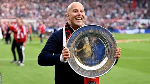

Arne Slot:
 Regarded as one of the best young managers in the world, Arne Slot came to Liverpool from the Dutch side, Feyenoord. Last season at his old club, Slot led his team to an Eredivisie title. His high octane pressing tactics are similar to those of Jurgen Klopp, so choosing him as Klopp’s heir was a no brainer for Liverpool.